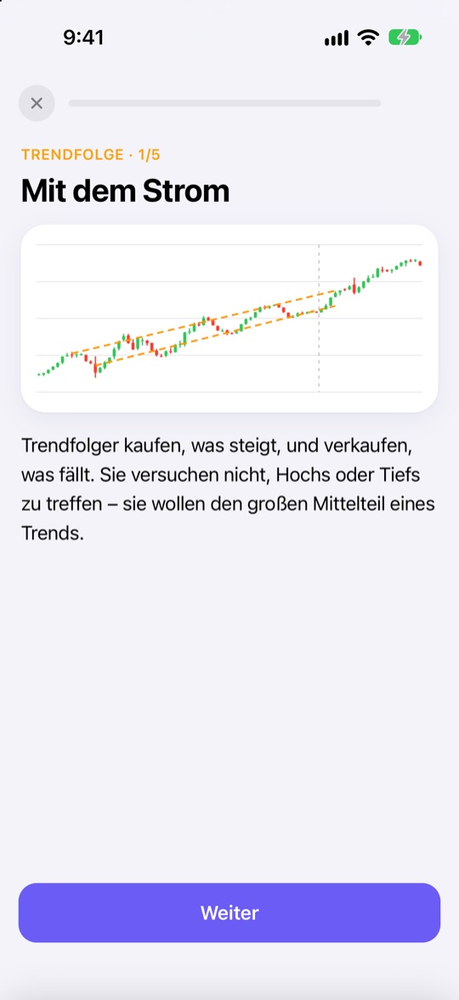

Indikatoren & Kennzahlen
Gleitender Durchschnitt: SMA, EMA und die 200-Tage-Linie einfach erklärt
Der gleitende Durchschnitt glättet den Kursverlauf und macht Trends sichtbar. Wie er berechnet wird, was die 200-Tage-Linie bedeutet und wo seine Grenzen liegen.

Ein gleitender Durchschnitt (englisch Moving Average) ist der Durchschnittskurs der letzten Tage, der jeden Tag neu berechnet wird. Er „gleitet“ mit dem Chart mit und glättet die täglichen Schwankungen. So wird sichtbar, in welche Richtung sich ein Kurs im Mittel bewegt. Er gehört zu den ältesten und am weitesten verbreiteten Indikatoren der Charttechnik.
Einfacher gleitender Durchschnitt (SMA)
Der SMA (Simple Moving Average) addiert die Schlusskurse der letzten n Tage und teilt sie durch n.
| Tag | Schlusskurs | SMA über 5 Tage |
|---|---|---|
| 1 | 100 € | – |
| 2 | 102 € | – |
| 3 | 101 € | – |
| 4 | 104 € | – |
| 5 | 103 € | (100 + 102 + 101 + 104 + 103) / 5 = 102,00 € |
| 6 | 107 € | (102 + 101 + 104 + 103 + 107) / 5 = 103,40 € |
Am sechsten Tag fällt der älteste Kurs (100 €) heraus, und der neue (107 €) kommt hinzu. Deshalb steigt der Durchschnitt nur um 1,40 €, obwohl der Kurs an diesem Tag um 4 € gestiegen ist. Genau das ist die Glättung.
Exponentieller gleitender Durchschnitt (EMA)
Der EMA (Exponential Moving Average) gewichtet die jüngsten Kurse stärker. Er reagiert dadurch schneller auf Trendwechsel, schlägt aber auch öfter falsch an.
| SMA | EMA | |
|---|---|---|
| Gewichtung | alle Tage gleich | jüngste Tage stärker |
| Reaktion auf Wechsel | langsamer | schneller |
| Fehlsignale | seltener | häufiger |
| Typische Zeiträume | 50 und 200 Tage für den großen Trend | 10 bis 20 Tage für kurzfristige Signale |
Die 50- und die 200-Tage-Linie
Die bekanntesten Durchschnitte sind die 50-Tage-Linie und die 200-Tage-Linie, oft „GD 200“ genannt. Die 200-Tage-Linie umfasst rund zehn Monate Börsenhandel, denn ein Jahr hat etwa 250 Handelstage. Viele Anleger lesen sie als groben Trendfilter:
- Kurs über einer steigenden 200-Tage-Linie: langfristiger Aufwärtstrend.
- Kurs unter einer fallenden 200-Tage-Linie: langfristiger Abwärtstrend.
Weil so viele Marktteilnehmer auf diese Linien schauen, wirken sie oft wie eine Unterstützung oder ein Widerstand. Was ein Aufwärts- oder Abwärtstrend über die Stimmung am Markt sagt, erklärt der Artikel Bulle und Bär.
Golden Cross und Death Cross
- Golden Cross: Die 50-Tage-Linie schneidet die 200-Tage-Linie von unten nach oben. Das gilt als Zeichen für einen beginnenden Aufwärtstrend.
- Death Cross: Die 50-Tage-Linie schneidet die 200-Tage-Linie von oben nach unten. Das gilt als Warnsignal für einen Abwärtstrend.
Beide Signale kommen spät, weil Durchschnitte der Vergangenheit hinterherlaufen. Oft ist ein großer Teil der Bewegung schon gelaufen, wenn sich die Linien kreuzen.
Grenzen des gleitenden Durchschnitts
- Verzögerung: Der Durchschnitt zeigt, was war, nicht was kommt. Je länger der Zeitraum, desto größer die Verzögerung.
- Seitwärtsphasen: Wenn der Kurs ohne Trend hin und her pendelt, kreuzt er den Durchschnitt ständig. Das erzeugt viele Fehlsignale.
- Kein richtiger Zeitraum: Ob 20, 50, 100 oder 200 Tage, keiner ist „der richtige“. Wichtig ist, den Zeitraum vorher festzulegen und nicht nachträglich so lange anzupassen, bis er in die Vergangenheit passt.
Kombiniert wird der Durchschnitt deshalb oft mit anderen Werkzeugen, etwa dem RSI für überkaufte und überverkaufte Phasen oder mit Kerzenmustern direkt an der Linie.
Trends und Indikatoren üben
In InQuestly lernst du im Gratis-Kurs Charttechnik & Muster, wie Trends und Indikatoren funktionieren. Weitere Indikatoren wie MACD und Bollinger-Bänder vertieft der Kurs „Indikatoren lesen“ mit InQuestly Pro. Die Kursverläufe zum Üben sind nachgebildet, echtes Geld ist nie im Spiel.
Häufige Fragen
Was ist ein gleitender Durchschnitt?
Der Durchschnittskurs der letzten n Tage, der jeden Tag neu berechnet wird. Er glättet Schwankungen und macht die Trendrichtung sichtbar.
Was ist der Unterschied zwischen SMA und EMA?
Der SMA gewichtet alle Tage gleich. Der EMA gewichtet die jüngsten Kurse stärker und reagiert dadurch schneller, erzeugt aber auch mehr Fehlsignale.
Was bedeutet die 200-Tage-Linie?
Der Durchschnitt der letzten 200 Schlusskurse, rund zehn Monate Börsenhandel. Viele Anleger nutzen sie als Filter für den langfristigen Trend.
Was ist ein Golden Cross?
Die 50-Tage-Linie kreuzt die 200-Tage-Linie von unten nach oben. Das gilt als Zeichen für einen beginnenden Aufwärtstrend, kommt aber meist spät.
Was ist ein Death Cross?
Die 50-Tage-Linie kreuzt die 200-Tage-Linie von oben nach unten. Das gilt als Warnsignal für einen Abwärtstrend.
Welcher gleitende Durchschnitt ist der beste?
Es gibt keinen besten Zeitraum. Lange Durchschnitte zeigen den großen Trend, kurze reagieren schneller. Wichtig ist, den Zeitraum vorher festzulegen.
Dieser Artikel dient der Bildung und ist keine Anlageberatung. Beispiele sind vereinfacht und ohne Steuern dargestellt.